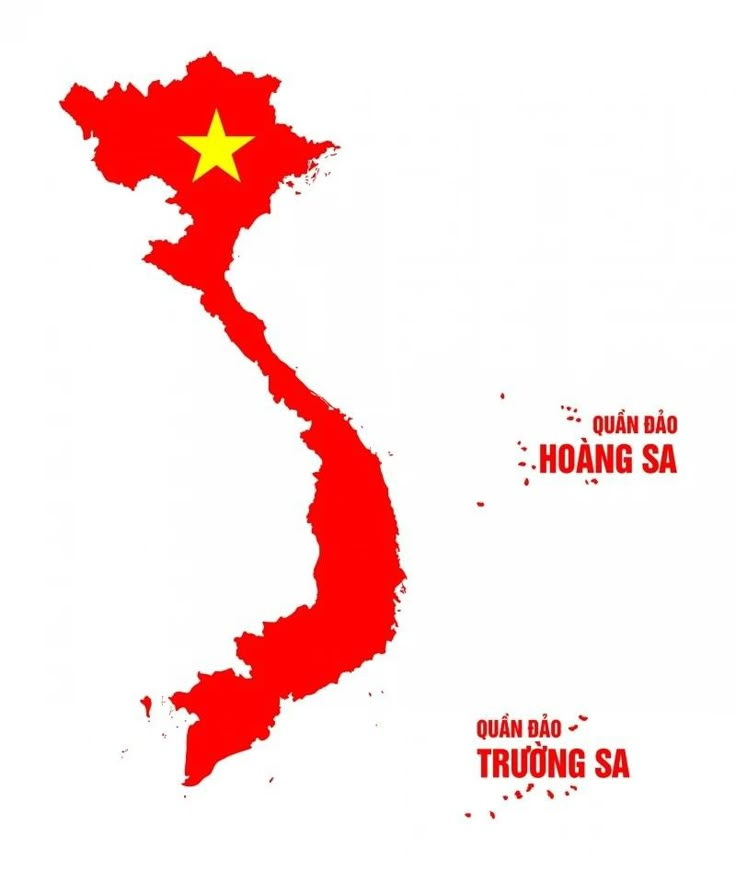

自然の宝庫：絶景を巡る旅
ベトナムの自然は、まさに「絶景」の宝庫です。世界遺産であるハロン湾の神秘的な岩山、サパに広がる黄金色の棚田、そしてダナンの真っ白な砂浜。 北から南まで約1,600kmにわたる国土は、訪れるたびに新しい感動を私たちに与えてくれます。
東南アジアの東端に位置するベトナムは、豊かな自然、深い歴史、そして活気あふれる人々に彩られた国です。 北部の壮大な山岳地帯から中部の美しい海岸線、そして南部の肥沃なメコンデルタまで、ベトナムは多様な顔を持っています。
ベトナムの自然は、まさに「絶景」の宝庫です。世界遺産であるハロン湾の神秘的な岩山、サパに広がる黄金色の棚田、そしてダナンの真っ白な砂浜。 北から南まで約1,600kmにわたる国土は、訪れるたびに新しい感動を私たちに与えてくれます。
ベトナムの自然は、まさに「絶景」の宝庫です。世界遺産であるハロン湾の神秘的な岩山、サパに広がる黄金色の棚田、そしてダナンの真っ白な砂浜。 北から南まで約1,600kmにわたる国土は、訪れるたびに新しい感動を私たちに与えてくれます。
ベトナムの自然は、まさに「絶景」の宝庫です。世界遺産であるハロン湾の神秘的な岩山、サパに広がる黄金色の棚田、そしてダナンの真っ白な砂浜。 北から南まで約1,600kmにわたる国土は、訪れるたびに新しい感動を私たちに与えてくれます。
| 国名 | ベトナム社会主義共和国 |
|---|---|
| 首都 | ハノイ (Hanoi) |
| 言語 | ベトナム語 (主要観光地では英語も通じます) |
| 人口 | 約1億30万人 (2024年統計) |
| 通貨 | ベトナムドン (VND) ※10,000VND ≒ 約60円 (変動あり) |
| 時差 | 日本より2時間遅れ (日本が正午の時、ベトナムは午前10時) |
| 電圧 | 220V (プラグタイプはA型・C型が一般的) |
| ビザ | 日本国籍の方は、45日以内の滞在ならビザ免除 (観光目的) |
バイクの波に驚くかもしれませんが、ゆっくりと一定のスピードで歩き続けるのがコツです。急に止まったり走ったりせず、運転手に自分の動きを予測させることが安全への近道です。
基本的にチップの義務はありませんが、高級レストランやスパで素晴らしいサービスを受けた際は、20,000〜50,000ドン程度を渡すと非常に喜ばれます。
お寺や聖なる場所を訪れる際は、肩や膝が出る服装（短パンやノースリーブ）を避けましょう。露出の少ない服装が敬意の印とされています。
水道水は飲めません。必ず市販のミネラルウォーターを購入してください。コンビニやスーパーで手軽に安く手に入ります。